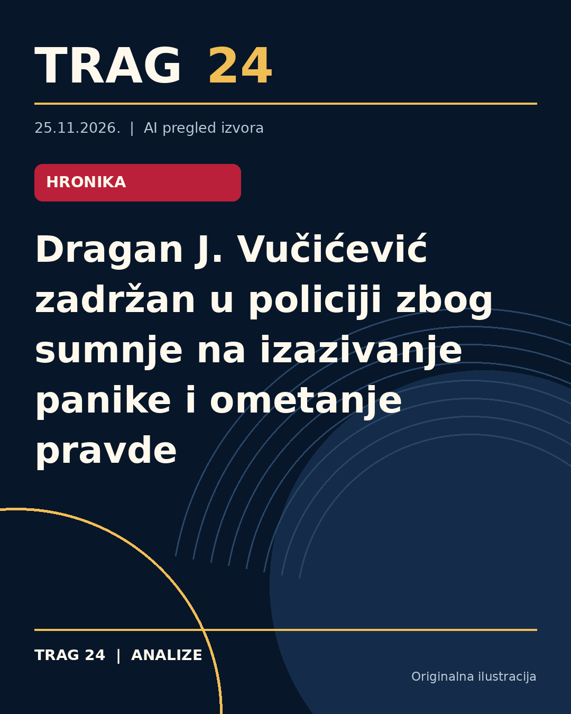

Dragan J. Vučićević zadržan u policiji zbog sumnje na izazivanje panike i ometanje pravde

ŠTA SE DOGODILO
Dragan J. Vučićević, glavni urednik Informera, zadržan je u policiji i biće saslušan pred javnim tužiocem Drugog osnovnog javnog tužilaštva u Beogradu. Postoje osnove sumnje da je počinio krivična dela izazivanje panike i nereda u produženom trajanju, kao i ometanje pravde.
HRONOLOGIJA
Vučićević je uhapšen u blizini zgrade televizije Informer. Informaciju o hapšenju saopštio je šef poslaničke grupe Srpske napredne stranke (SNS) Aleksandar Vučić tokom sednice Skupštine Srbije, ističući da je hapšenje povezano sa novinarskim radom Vučićevića. Po izricanju opomene jednoj od poslanica, skupštinska sednica je prekinuta, a poslanici SNS su napustili salu i uputili se ka Policijskoj stanici Voždovac gde su pružili podršku Vučićeviću. Pritvor je određen na osnovu naloga Drugog osnovnog javnog tužilaštva.
ŠTA NAVODE IZVORI
Prema informacijama iz dostupnih izvora, Vučićević se sumnjiči za iznošenje lažnih tvrđenja koja izazivaju paniku i narušavaju javni red i mir. Šef poslaničke grupe SNS-a Aleksandar Vučić komentarisao je hapšenje kao posledicu Vučićevićevog novinarskog rada. Studenti sa Fakulteta za medije i komunikacije i Filozofskog fakulteta su reagovali na društvenim mrežama, pozivajući na preispitivanje rada Informera i komentarišući hapšenje. Ispred Policijske stanice Voždovac okupili su se podržavaoci, među kojima su bili i pojedini poslanici i javne ličnosti.
ŠTA JE POTVRĐENO
Potvrđeno je da je Dragan J. Vučićević uhapšen i zadržan po nalogu Drugog osnovnog javnog tužilaštva u Beogradu zbog sumnje na krivična dela izazivanje panike i ometanje pravde. Takođe je potvrđeno da će biti saslušan pred javnim tužiocem 26. novembra 2026. godine. Javna podrška Vučićeviću iskazana je od strane poslanika SNS pred policijskom stanicom Voždovac.
ŠTA NIJE POTVRĐENO
Nije potvrđeno da je hapšenje direktno povezano isključivo sa novinarskim radom Dragana J. Vučićevića, niti su iznete detaljnije informacije koje bi precizno obrazložile navode o sadržaju njegovih dela ili dokaze za iznesene optužbe. Takođe, izjave pojedinih učesnika i studenata predstavljaju njihova stajališta i nisu zvanični pravni zaključci.
ŠTA OSTАJE OTVORENO: Ostaje otvoreno da li će dalsja pravna procedura potvrditi ili odbaciti sumnje koje su navedene u predmetu. Takođe nije poznato kako će se razvijati situacija u političkom i medijskom kontekstu, posebno u pogledu daljih reakcija javnosti i institucija na hapšenje Dragana J. Vučićevića.
Izvori
- https://www.klix.ba/vijesti/regija/dragan-j-vucicevic-ostaje-u-policiji-i-do-48-sati-sns-ovci-dosli-pred-stanicu-da-ga-podrze/261125077
- https://www.blic.rs/vesti/hronika/uhapsen-dragan-j-vucicevic/b2ee8ny
- https://www.24sata.hr/news/dragan-j-vucicevic-glavni-urednik-informera-ostaje-u-pritvoru-izazivao-paniku-1170997
Ova analiza je pripremljena uz pomoć veštačke inteligencije na osnovu javno dostupnih izvora. Navodi izvora nisu nužno nezavisno potvrđeni.